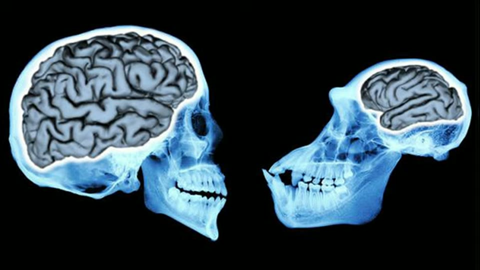
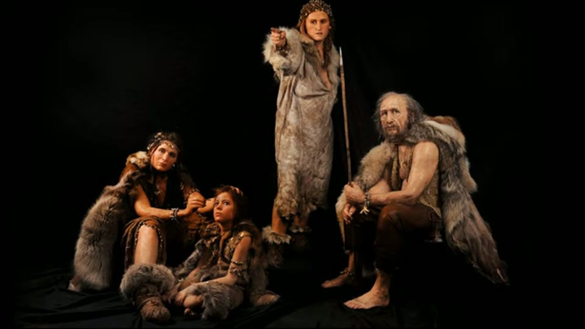

Curious Being
The Change of Human Brain Sizes Illuminating the Age of Megalithic Sites
Tina · 18 min · watch on YouTube · summarised 2026-08-24
This is the first part of a trilogy made over eight weeks in the summer of 2022, and it is where the thesis begins. Everything the corpus argues about traces back to the question asked here.
The observation
Human brain volume nearly tripled over more than three million years, and with the largest brain-to- body-mass ratio of any mammal we made tools, used fire, built homes and started civilisations. Then it reversed 00:00–01:08.
The human brains have been decreasing for quite a while, and the brain size decline is about five times faster than our body size changes… Believe it or not, our brains are now the smallest they have been at any time in the past 100,000 years — over 10% smaller.
She is careful about what is and is not settled 01:31–02:38. Around 300,000 years ago, at the rise of the species, Homo sapiens brains were about the same relative size as today's. They peaked 100,000 years ago, stayed level for a while, then declined — and the timing of that decline is disputed. Some say over the last 50,000 years, some 40,000, some 12,000; some argue most of it happened in the last 6,000, some the last 3,000.
The figures she gives:
| when | average |
|---|---|
| 100,000 years ago | ~1550 cc |
| 12,000 years ago | ~1450 cc |
| today, "many online sources" | ~1350 cc |
| today, a 2007 study | men ~1260 cc, women ~1130 cc |
That means we lost about 190 cc of brain, which is a bit bigger than the volume of a tennis ball.
At that rate, she notes, in another 20,000 years we would approach Homo erectus, who lived half a million years ago with about 1000 cc.
The "2007 study" is on screen, and it is a Wikipedia paragraph rather than a paper. She highlights the sentence giving 1260 cm³ for men and 1130 for women. The sentence immediately after it, unhighlighted, reads: "There is a range of volume and weights, and not just one number that one can definitively rely on, as with body mass." And the section heading below begins by noting that Neanderthal brain size exceeded modern humans'.

The figures the whole thesis is built on, and where they come from.
Size, ratio, and Neanderthals
The refinement matters, and it heads off the obvious objection 02:38–04:10. It is not simply brain size but size relative to body size — the encephalization quotient. Research finds a close relationship between intelligence and EQ, and hominin development is marked by increasing encephalization.
The Neanderthals had even bigger brains than modern humans, though they also had a bigger body. Therefore their EQ is smaller than ours. Thus the Neanderthals were probably less intelligent than modern humans.
She also notes that climate does not appear to affect brain size development, so glacial and interglacial periods may not matter much to the change.

Brain size relative to body size, and how it is illustrated.
The image under that passage is a human braincase beside an ape's — a far larger difference, and not the comparison being argued.
Why it declined — and her honesty about it
This section is more careful than the rest of the corpus suggests 04:10–05:28. She states plainly that nobody knows:
It's not clear why human brain size has been declining since the late Pleistocene, nor do we know the impact, if any, to human cognition.
And she lists the competing explanations rather than choosing one: self-domestication (people becoming tamer and more cooperative), sexual selection, sociality, shifting cognitive demands to tools and technology, externalization of knowledge, group-level decision making, and emotional plasticity.
These are all conjectures, and so far there is no definitive answer on this alarming, if not disturbing, phenomenon.


The people the argument is about, and what stands in for them.
The argument: what was the brain for?
The core of the video, and it is a genuine puzzle rather than a rhetorical one 05:28–11:19.
Brains are expensive. They are about 2% of body weight and consume almost a quarter of energy intake; larger-brained hominins had much higher resting metabolic rates; and large heads increase the risk of death in childbirth. Evolution pays that cost only against commensurate benefit — so there must have been a tremendous benefit.
Humans have no claws, no long teeth, no speed, no climbing ability. Survival and dominance came from the brain, which supplies the machinery for tool making, forward planning, language, innovation and social perception.
So:
If the significantly smaller brains of Homo erectus were already capable of creating stone tools, I imagine the archaic Homo sapiens with their larger brains should have accomplished much more. But yet we were taught that they remained in a Paleolithic period and didn't make notable innovations.
Homo erectus made flaked tools and managed fire over a million years ago. Paleolithic Homo sapiens made better stone tools but lived a broadly similar life — bone needles, hearths, stone arrows. Brain size peaked 100,000 years ago with no significant technological advance around then, and the Paleolithic ran on for another 88,000 years.
And then the reversal that makes the puzzle sharp:
During the following 12,000 years the same group of people jumped from the Paleolithic period to Neolithic, to Bronze Age, then Iron Age, all the way to industrial revolution and built our modern society — well, with a smaller brain. How did this happen? Why couldn't they make such technological leaps sooner?
Her inference: if 12,000 years suffices to get from stone tools to landing rockets on Mars with our reduced brains, there was plenty of time for ancestors with higher EQ to build something extraordinary too.
But why is there no evidence of real ancient sophisticated productions other than stone arrowheads? What if there always has been such evidence, and we don't see it for what it really is?
The turn to the megalithic sites
The proposal 11:19–12:23: the worldwide megalithic phenomenon is the creation of those larger-brained people, and these places are the footprints of a lost civilisation. Giza, Petra, Baalbek, Machu Picchu, Sacsayhuamán, Puma Punku, Yangshan Quarry, the Longyou caves.

The sites offered as what the large brains were for.
Herodotus
The most substantial new material in this video, and it is an argument about sources rather than stones 12:23–14:35.
Megalithic structures lack contemporaneous historical records, which has not stopped people making assumptions. Herodotus — called the father of history for being the first to collect material systematically — admitted he was not an eyewitness on many topics and was reporting only what he had been told. Some call him the father of lies.
He wrote that the three Giza pyramids were built for Khufu, Khafre and Menkaure by enslaving their people. Khufu's reign was around 2600 BC; Herodotus wrote in 450 BC — over two thousand years later.
How did Herodotus get his source of information? We don't know.
Two of his specifics are wrong, and she gives both:
- He wrote that the Great Pyramid's base length equals its height. It does not — the base is about 83 m (272 ft) longer.
- He thought iron was used in the construction. On his own dating that would be the Bronze Age, with no iron.
The source she argues the Khufu attribution rests on.
Her conclusion is a claim about the discipline:
Archaeological academia however subscribed to Herodotus's claim and attributed the Great Pyramid to the dynastic king Khufu.
Where the machines went
The last section, which the capstone repeats three weeks later 15:33–17:34. If the civilisation was built after the brain-size peak, and took about the same 12,000 years to progress, then its machines would be roughly 30,000 years old. Metal objects rust away fairly quickly — a few hundred to a thousand years; surviving metal would be scavenged and recast; some might have deteriorated to something resembling hematite. Remnants would be buried deep, possibly under 20 m of sediment, or submerged.
She ends on an optimistic note rather than a certainty: the Antikythera mechanism, two thousand years of lost technology recovered from a Greek shipwreck, is her precedent for the idea that such things do turn up.

Her precedent for lost technology turning up.
What you can check yourself
- The decline is real, published and uncontested. That modern brains are the smallest in 100,000 years is a finding anyone can read. What it means is the disputed part, and she says so.
- The disagreement about timing is itself checkable — she reports five different published positions (50,000, 40,000, 12,000, 6,000 and 3,000 years) rather than picking one.
- The 2007 study figures are specific: men ~1260 cc, women ~1130 cc.
- The energetic cost of the brain is standard physiology: about 2% of body mass and roughly a quarter of energy intake.
- The Neanderthal EQ point can be looked up — larger endocranial volume, larger body, and what that does to the ratio. Her own screenshot states the first half of it plainly.
- The Great Pyramid's dimensions are measured to the centimetre. Base about 230 m, height about 147 m. Herodotus's claim that they are equal is wrong and the error is enormous.
- Herodotus is in print and is short. Book II of the Histories is where the pyramid passage is, and anyone can read what he actually says and how he says he knows it.
- The Antikythera mechanism is in the National Archaeological Museum in Athens, and its literature is large.
What the video does not settle
- Endocranial volume is a poor proxy for cognition, and the video's own sources say so. She reports that we do not know the impact of the decline "if any" on cognition, then reasons as though Paleolithic humans were "as smart as, or smarter than" us. Both claims are made and the second does not survive the first.
- The list of competing explanations is her best evidence against her own argument. Shifting cognitive demands to tools, and externalization of knowledge, both predict exactly what she treats as a paradox: brains get smaller because the culture gets more capable. That reading is stated and not weighed.
- The arithmetic does not hold together, and the caveat is on her own screen. She gives 1550 cc at 100,000 years ago against a modern 1350, or 1260 for men — differences of 200 and 290. The stated loss is 190 cc, which no pair of her own numbers produces. The Wikipedia paragraph she is reading from says so directly in the sentence below her highlight: there is a range of volumes and weights, "not just one number that one can definitively rely on". She highlights the number and not the warning.
- The "2007 study" was not read. It is a citation inside the Wikipedia article on screen, quoted at second hand, and nothing is said about its population, method or sample.
- "No significant technological advance" over 88,000 years is an overstatement she elsewhere contradicts. In the capstone she reports a marked increase in tool diversity and cave painting around 50,000 years ago, and the archaeological literature on the Upper Palaeolithic transition is substantial. None of it is mentioned here.
- The 12,000-year extrapolation assumes progress runs at a constant rate, which nothing supports and which her own thesis denies — she needs a civilisation to rise and then stop.
- The 30,000-year figure does not follow from her own premises. She says the civilisation was built after the brain-size peak "over a hundred thousand years ago" and took 12,000 years to develop, which gives roughly 88,000 years ago, not 30,000. The number arrives without derivation.
- The Herodotus argument attacks a source the attribution does not rest on. That Herodotus is unreliable about the pyramids is well established and not controversial. That "archaeological academia subscribed to Herodotus's claim" is asserted with nothing behind it, and the video does not mention or address what else the Khufu attribution might rest on — the workmen's graffiti in the relieving chambers, the Wadi al-Jarf papyri, or the surrounding mastaba field.
- "Many experienced stonemasons and experts have confirmed these sites were not created by hand chisels" is the same anonymous appeal that opens the capstone. No name, number, trade or quote.
- Nothing here dates a megalithic site. The title promises the brain-size change will illuminate the age of the megalithic sites; what the video offers is an argument that people 100,000 years ago could have built them. Capability is not evidence of authorship.
- Metal rusting away "in a few hundred to a thousand years" is stated flatly and is untrue of many metals in many conditions — gold, lead, bronze and buried iron all survive far longer, and bronze and gold objects from 3,000–5,000 years ago fill museums. The video's own Antikythera example is a corroded bronze mechanism that survived 2,000 years in seawater.
- The Antikythera precedent argues against her. It survived, it was recognised, and it is 2,000 years old — from a civilisation that also left mines, slag, coins, ceramics and texts.
See also
- Who Really Built the Megalithic Sites? — the second part of the trilogy, five weeks later, and the video promised in this one's closing seconds.
- If It Existed, Where Are the Machines? — the third part, eight weeks after this one, which takes the conclusions reached here as its premises. Read the three in order.
- Was an Advanced Civilization Wiped Out by a 12,800-Year-old Comet at Younger Dryas? — eighteen months earlier, where she tested a mechanism for the collapse this thesis needs, and rejected it.
- Great Pyramids' Radiocarbon Dating — the argument that dynastic Egyptians found the pyramids rather than built them, made from mortar rather than from brains, and the entry where the Khufu attribution is actually examined.
- The Truth About Gunung Padang — two years later, and the clearest example of her applying strict standards of evidence to somebody else's claim of the kind she makes here.
What we have not checked
- No source in this video has been located or read. The 2007 brain volume study, the five competing decline timings, the EQ research and the metabolic figures are all as she gives them.
- The Khufu attribution has not been examined for this entry. That it does not rest on Herodotus is asserted in the honesty section above from general knowledge of what evidence exists at Giza, and has not been verified against a source here.
UgLuLd_4B18is where the dating evidence is treated at length. - This is an auto-generated transcript with heavy mangling. "plasticine" is Pleistocene; "flamed tools" is flaked; "grey pyramid" and "gray pyramid" are the Great Pyramid; "haradas" and "herreras" are Herodotus; "mankori" is Menkaure; "sarapim" is the Serapeum; "antichrist mechanism" is the Antikythera mechanism; "larger ranks" is larger brains; "megalithic structures like contemporaneous historical records" is lack. Nothing should be quoted without checking the video.
- The Great Pyramid figures she gives have not been checked — the 83 m / 272 ft difference between base length and height is as stated.
- Whether the 2007 study she cites is about a specific population is not said, and matters: mean cranial volume varies by population and by measurement method.